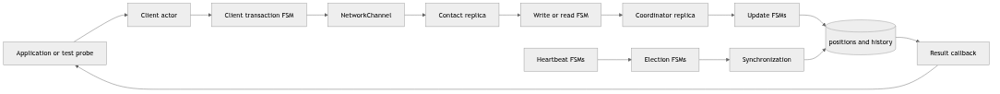
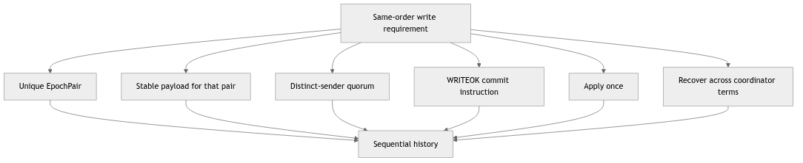
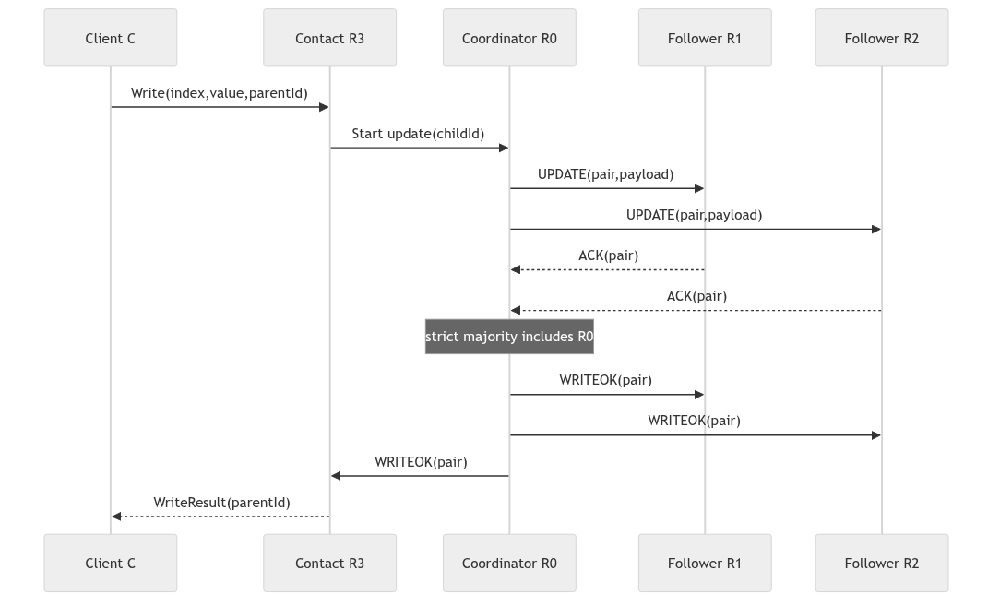
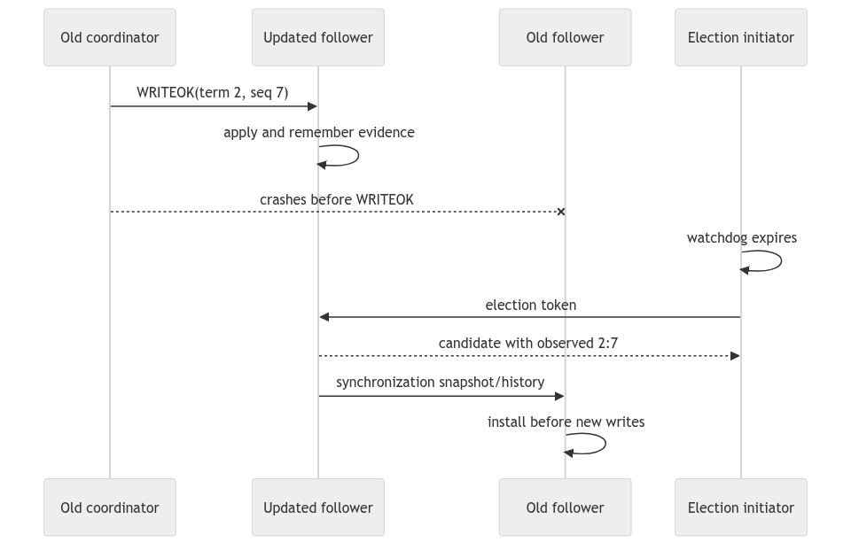
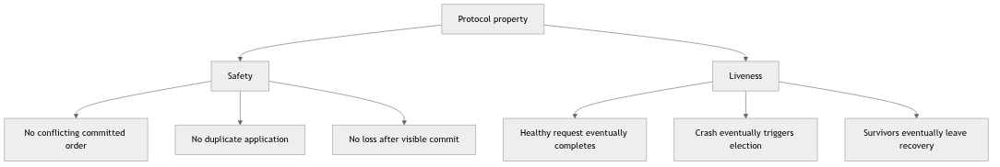
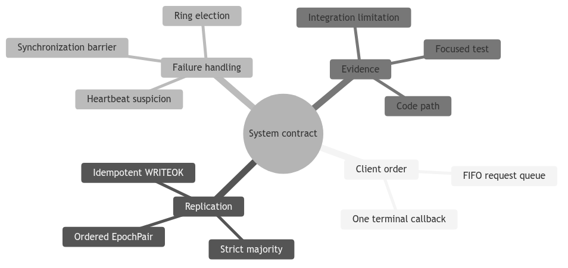

Purpose. This report explains what the system is supposed to achieve before discussing how the Java classes attempt to achieve it. It is a study report, not the final exam report.
Primary source: specs/ds1_project_2026_v1.pdf, dated June 2026.
Repository snapshot inspected: feature/electionTransaction, commit d1222a2.
Important status note: the working repository is split across feature branches. A requirement described here is not automatically an implemented feature.
Imagine several offices, each holding a copy of the same array of integers. Each array index represents one person and the integer at that index represents that person’s position. A client may ask any office to read a value or change a value.
Reading is simple: the contacted replica returns its local value immediately. Writing is harder. If two replicas apply changes in different orders, their arrays can diverge. The project therefore appoints one replica as coordinator. All writes pass through that coordinator, which orders updates and distributes them.
The coordinator may crash. The remaining replicas must notice, choose a replacement, recover any work that the old coordinator left half-finished, and only then accept new writes.
The system is therefore built around two large algorithms:
There are two kinds of application actors:
positions[] array. One replica is also the coordinator.Membership is static. Every replica receives the complete map from numeric replica IDs to Akka ActorRefs during initialization. No replica joins later, and a crashed replica never recovers.
The specification assumes that a strict majority of replicas remains correct. For N replicas, the quorum size is:
Q = floor(N / 2) + 1
For five replicas, Q = 3. The coordinator counts as one of those three.
A read request contains an array index and the client’s actor reference. The contacted replica reads its own positions[index] and replies immediately. It does not ask the coordinator or a quorum.
This design provides sequential consistency from one replica’s point of view: operations sent by one client to one replica are observed in the order sent. It does not promise that a client switching arbitrarily between replicas always sees the newest real-time value.
The distinction matters in an exam. A local read is fast, but a replica that has not yet received a committed update can temporarily return an older value.
A write request contains (index, value). The contacted replica forwards the work to the current coordinator. The coordinator then performs the update protocol:
⟨epoch, sequence⟩.UPDATE(index, value, epochPair).ACK.WRITEOK.positions[] only after WRITEOK.The epoch identifies a coordinator term. The sequence number identifies the order within that term. Epochs increase when the coordinator changes; the sequence returns to zero at the start of the new epoch.
For example:
<2, 7> comes before <2, 8>
<2, 100> comes before <3, 0>
TransactionId and EpochPair are not interchangeable. A transaction ID routes one local or distributed conversation. An epoch pair gives a replicated update its total-order position.
The specification describes four properties. Translate them into questions:
A before B, do all correct replicas apply A before B?Uniform agreement includes replicas that later crash. Suppose replica 2 applies update U and is then destroyed. The value must not disappear from all surviving histories. Recovery after coordinator failure exists largely to protect this property.
The project specifies three ways to suspect the coordinator:
UPDATE.UPDATE but never receives WRITEOK.HEARTBEATs stop arriving.These mechanisms detect different silences and should not be collapsed into one timer. Failure detection is assumed accurate: reasonable timeout values must not create false elections under the configured network delay.
Replica IDs define a logical ring. An ELECTION message circulates through available replicas. Each participant adds its freshest observed update information. A sender waits for an ACK; if the next replica crashes, timeout handling skips it.
The best candidate is the replica that knows the most recent update. Numeric replica ID breaks a tie. After a winner is found, the new coordinator must:
SYNCHRONIZATION;Choosing a leader and recovering replicated state are separate responsibilities. A correct election can still produce an incorrect system if synchronization loses an incomplete update.
The environment promises:
The implementation must still provide:
Logger.An assumption is not a feature. For example, “channels are reliable” means messages are not lost by the model; it does not remove the need to route replica traffic through NetworkChannel so FIFO delay behavior is preserved.
At the inspected snapshot:
origin/main at 84846dc contains transaction infrastructure and heartbeat behavior.origin/feat/readTransaction at 1ed58b6 contains the read FSM.origin/feat/WriteTransaction at 8c42a18 contains the client/contact-replica write wrapper.origin/feat/UpdateTransaction at 59bbe80 contains a partial UPDATE/ACK/WRITEOK implementation.feature/electionTransaction at d1222a2 contains election and snapshot synchronization.These branches are not one verified final system. In particular, timeout-driven update recovery and history replay are incomplete, and the current election synchronization copies a position snapshot rather than replaying every missing update.
You should be able to answer these without looking at the code:
TransactionId and EpochPair?The central invariant to remember is: once an update is applied anywhere, recovery must ensure that every correct replica eventually applies that update in the same relative order.
client request
|
v
client transaction ---- local read ----> replica.positions[index]
|
+---- write ----> coordinator ---- UPDATE/ACK ----> quorum
|
+---- WRITEOK ----> all replicas
|
v
history + positions
heartbeat notices silence -> election ring -> freshest candidate -> snapshot sync
-> new term -> normal traffic
This map is useful because a requirement is not implemented by one class. A
write requirement crosses the client queue, a parent write transaction, a
replica update transaction, NetworkChannel, quorum bookkeeping, and the
state/history layer. Likewise, “the coordinator can fail” is not only a crash
test: heartbeat must notice it, election must choose a replacement, and
recovery must make the replacement safe before new writes are accepted.
When reading a method, write the requirement in plain English first and then look for the exact state transition that enforces it. For example, the sequential-read contract can be decomposed as follows:
| Contract sentence | Concrete question to ask in code |
|---|---|
| A read observes the replica's current value | Does the handler read positions[index] at handling time, rather than from a cached request? |
| Requests from one client keep their order | Is a second request queued until the first transaction reaches a terminal state? |
| Every request has one result | Do success, timeout, and crash paths all clear the same active transaction exactly once? |
| A write becomes visible in one order | Is the same ordered EpochPair recorded before each replica applies the WRITEOK? |
This technique prevents a common exam mistake: pointing at a class name and calling it “the implementation.” The implementation is the chain of guards, messages, and state mutations that makes the sentence true.
Suppose client C writes x=7, then immediately reads x. The write first
needs a commit decision. The client therefore remains in its write transaction
until the parent receives completion. Only then does the request manager start
the read transaction. The read is local, so it can return immediately from the
selected replica. If the write were allowed to complete its callback before
WRITEOK was installed, the read could legally hit a replica that still stores
the old value. The client-level queue is therefore part of the consistency
argument, not just a convenience for tidier code.
For revision practice, draw the same timeline with a coordinator crash between ACK and WRITEOK. Mark which facts are known (quorum evidence, candidate history, visible positions) and which are unknown (whether every replica saw the commit). That distinction is the bridge from the requirements report to the election and recovery reports.
The following diagram is the map to keep beside you while reading every other report. The arrows show responsibility rather than Java inheritance. A request starts in a client-owned FSM, crosses an actor boundary, becomes a replicated update, and may later become recovery evidence. Failure detection and election run beside that foreground path rather than inside it.

Read the diagram from left to right for normal work and from heartbeat down to state for failure recovery. Notice that the application never directly edits replica state. Every boundary introduces a question: which ID identifies the conversation, who is allowed to send the next message, which epoch applies, and what happens if the event arrives after a timeout?
Take the sentence “writes are applied in the same order by all correct replicas.” It hides at least six smaller obligations. The coordinator must assign one ordered identity. Participants must associate the same payload with that identity. The quorum decision must not count one participant twice. WRITEOK must carry the decided identity. Applying it must be idempotent. Finally, election and synchronization must preserve the decision if the coordinator crashes. A useful report explains every obligation separately and then reconnects them.

This decomposition is also a debugging method. If replicas disagree, do not begin by staring at the final arrays. Compare the assigned pairs, then the payload associated with each pair, then quorum membership, then WRITEOK delivery, and finally recovery state. The first layer that differs is closer to the root cause than the visible array mismatch.
Assume five replicas, R0–R4, with R0 as coordinator. Client C sends a write to R3. R3 owns the parent write transaction because it is the client’s contact point. Its child update reaches R0. R0 assigns the next pair, broadcasts UPDATE, and counts its own knowledge. When two distinct followers ACK, the set has three members, which is a strict majority of five. R0 broadcasts WRITEOK. Each receiver checks the transaction, sender, state, and pair before applying. R3 can then complete its parent and reply to C.

The diagram deliberately omits random delay arrows. NetworkChannel may
delay each hop, but FIFO only constrains messages on the same directed link.
R2 may ACK before R1 even if R1’s UPDATE was scheduled first. Correctness comes
from the pair and responder set, not global arrival order.
A read addressed to R3 examines R3’s materialized position at the mailbox turn that handles the read. If C queues the read after the write, the client manager does not start it until the write reaches a terminal callback. That produces C’s session order. A read from a different client may be handled at another replica during dissemination, so the system-level consistency claim also depends on when WRITEOK makes values visible and what reads are allowed during synchronization.
Now crash R0 after it sends WRITEOK only to R1. R1 has made the value visible; the other correct replicas may still expose the old value. Uniform agreement means the visible update cannot simply disappear. Heartbeat silence triggers election, candidate freshness helps select a replica with relevant evidence, and synchronization must carry enough information to complete or safely reconcile the update before accepting a newer-term write.

Ask four questions at every failure boundary. What fact had become externally visible? Which surviving nodes know that fact? Which message or history entry represents it? Which barrier prevents newer work from overtaking recovery? These questions are more precise than saying “the election fixes it.”

A code branch can demonstrate one local mechanism without establishing the
system property. The read branch can correctly correlate a result while the
integrated system still lacks a recovery barrier. The update branch can count
a quorum while failing to mutate positions[]. The election branch can choose
a deterministic candidate while copying only a snapshot rather than complete
history. Therefore, exam language should distinguish “the class contains this
mechanism” from “the combined system satisfies the property.”
Use this five-part sentence when writing the later exam report: property, mechanism, code location, evidence, limitation. For example: “Follower watchdog versions prevent a queued old timeout from starting a new election; the heartbeat FSM compares the event generation in its expiry handler; focused tests cover stale expiry, while full integration with repeated coordinator changes remains a separate requirement.” This wording is both educational and honest.
If you can answer these without referring to class names, you understand the contract. The class names can then be added as implementation evidence rather than memorized as substitutes for reasoning.

An engineering requirement is useful only when we can say what observation would contradict it. Consider the sentence “all correct replicas eventually apply every delivered update.” The word all makes this an agreement claim; eventually makes it a liveness claim; correct limits the claim to replicas that do not crash; and delivered update identifies the event that creates the obligation. If one surviving replica applies an update and another surviving replica can remain forever without it, a counterexample exists. Reading the sentence this way turns natural language into something we can trace, test, and discuss precisely.
This style of decomposition is especially important because the project mixes several levels of contract. Akka supplies actor isolation and a basic message transport model. The course infrastructure supplies API shapes, callbacks, crash controls, and network-delay helpers. The project protocol must supply quorum decisions, update ordering, failure handling, and recovery. None of these layers automatically proves the layer above it. A serialized mailbox protects a replica’s Java fields from simultaneous handlers, but it does not make two replicas agree. A reliable FIFO channel preserves one stream, but it does not choose a global order for streams from different senders. A majority ACK set proves that many replicas observed an update, but visibility still waits for the defined commit event.
Safety says that no forbidden state is reachable. Typical safety questions
are: can two payloads share one EpochPair; can an old-term WRITEOK overwrite
newer state; can one client transaction emit both success and timeout; or can
the same update be applied twice? A safety argument usually identifies an
invariant and shows that every accepted event preserves it. One concrete
invariant is “a committed pair has one immutable payload.” Constructors,
message validation, history lookup, and duplicate handling are the mechanisms
that must preserve that statement.
Liveness says that some desirable event is eventually reached. Typical liveness questions are: does a healthy write complete; does a follower eventually suspect a silent coordinator; does an election token bypass a dead neighbor; and are writes released after synchronization? Liveness arguments need assumptions about time and failures. In this assignment those assumptions include bounded simulated delay, accurate timeout choices, static membership, and a surviving strict majority. If a proof silently assumes that every replica survives, it is proving a different system from the specified one.
The distinction also explains why a client timeout is not a rollback. The client FSM can safely terminate because its waiting budget expired. Meanwhile, the replica protocol may already have crossed quorum and therefore be obliged to finish disseminating the update. The client-level liveness outcome and the system-level safety obligation coexist. Treating the timeout as permission to erase the update would confuse two scopes of state.
Take the uniform-agreement property and derive a review path. First identify
the trigger: a replica applies an update on WRITEOK. Next identify durable
evidence: the update pair, payload, and observed/committed history status.
Then enumerate disruptive events: coordinator crash before quorum, after
quorum, during WRITEOK, and during synchronization. Finally follow the
evidence through election candidate selection and the recovery barrier. The
property is not implemented by one method called applyUpdate; it is
implemented by the fact that sufficient evidence survives every transition
that might otherwise abandon the update.
Now contrast a weak argument: “the coordinator broadcasts WRITEOK, so every
replica applies.” This assumes the coordinator stays alive for the full loop
and every destination processes the message. The assignment explicitly allows
a crash during dissemination. A stronger argument says which survivors retain
the update, why the election selects a sufficiently fresh candidate, how
synchronization completes missing dissemination, and when new writes are
allowed to begin. The counterexample improves the design because it locates
the exact missing obligation.
For each subsystem, keep a four-column notebook: claim, mechanism, evidence, and status. A claim is one sentence from the specification. The mechanism is an exact class, handler, field, and transition. Evidence is a focused test or a complete trace with negative assertions. Status records whether the behavior exists on this ref, another feature ref, or only in the specification. This method prevents code from one branch and a test from another branch being combined into an imaginary integrated implementation.
When a mechanism is incomplete, weaken the conclusion rather than hiding the gap. “The heartbeat FSM rejects stale watchdog generations in its focused tests” is defensible. “Coordinator recovery is correct” requires heartbeat, election, history selection, synchronization, update resumption, and multi-failure tests to work together. Academic writing gains credibility from clear boundaries: a partial result can still teach an important design idea when it is labeled accurately.
The authoritative project contract is specs/ds1_project_2026_v1.pdf. For the
runtime model, consult Akka’s official What is an
Actor?
and Message Delivery
Reliability
chapters. Use those sources to check framework-level claims; use this
repository’s source and tests to check project-level claims. The rest of these
reports follows that separation.